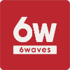

"Full Stack," Broad Skillset
13 years professionally
21 years hobby
Bay Area, California
recursive.cookie.jar@gmail.com
pgp public key
github: corps
Experience
Rollbar
Oct 2018 - Present
Lead Developer for the Sync Product. Made many lateral improvements to a large legacy Chef / Ruby code base, including improving reliability & performance as well as feature improvements. Carefully migrated legacy infrastructure while introducing Nomad, Consul, Prometheus, and other modern infra tools in support of those efforts.
Rollbar
Jan 2018 - Oct 2018
Core Team Developer, working on product features spanning web and pipeline. Spearheaded GDPR compliance development efforts, which involved complex legal, operational, and application requirements. Mentored and provided close guidance to junior developers.
株式会社空色
Apr 2016 – Oct 2017
Application Lead for mixed team of remote and local Japanese developers, building SPA frontend for a real time support service system, an external site integration toolset, and supporting API. Trained junior developers, managed remote developers, and lead development. Became proficient in technical Japanese.

Square
May 2012 – Oct 2015
Growth and internationalization, followed by a complete refactring of merchant facing accounting and analytics services. Hunted down many complex accounting and incompleteness bugs in the numerous payments pipelines in the system, touching everything from native clients to payments and reporting. Very high standard for correctness, scale, and performance, learned from many great engineers.

LogN
Dec 2010 – Jan 2012
Python, JS/CSS, PHP, and Ruby contract development across variety of web products. Mastered the art of investigating and maintaining complex systems written by 3rd parties.

6 Waves (Lolapps)
Apr 2012 – Apr 2010
Built high volume Facebook apps and produced A/B test tooling / pipelines. First experience with caching, heavy real time database handling, and complex race conditions. Lots of Python, Flash, and JS/CSS development.
NTTMCL
Jul 2006 – Apr 2009
Python and Windows C development on WiFi drivers and supporting 802.1X authentication for XP and early Windows Mobile devices. Learned a lot about CPython, and practical memory optimization in C (windows mobile devices had very peculiar process memory paging).

NTTMCL
2005 School Year – Jul 2006
Worked on Optical Character Recognition algorithms for aligning and matching records from various public sources, such as phone books and public records, with unpredictable formats, errors, non-text images, and per-page variable quality.